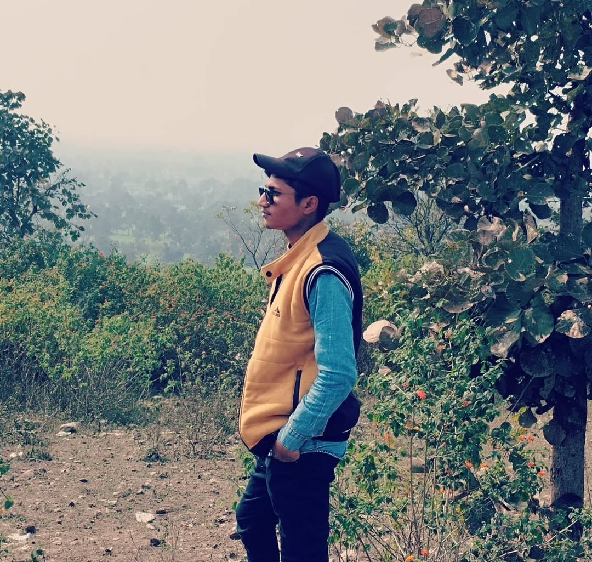

My Journey in Pictures
Ready for the Next Step
Captured during a day of professional preparation, symbolizing my readiness for future challenges and opportunities.

Exploring Horizons
A moment of reflection amidst nature, reminding me to always look ahead and embrace new perspectives.

Festive Spirit
Enjoying the vibrant energy of an event, celebrating culture and community. (Background subtly blurred for focus)